Abbildung ähnlich – zeigt den Produkttyp.
Klett-Schleifgitter Ø 225 mm für Wand- und Deckenschleifer (Mischsatz K80–K180, 25 Stück)
Offenes Netz-Schleifmittel mit Klettrücken für Langhals- und Trockenbauschleifer: trägt Spachtelmasse, Putz und Farbe ab, ohne zuzusetzen, der Staub wird durch den Teller abgesaugt.
Klett-Schleifgitter Ø 225 mm sind das Verbrauchsmaterial für Langhals- und Trockenbauschleifer („Giraffe“) und tragen Spachtelmasse, Putz und Farbe auf Wand- und Deckenflächen ab. Das offene Netzgewebe lässt den Schleifstaub direkt durch den Maschinenteller in die Absaugung entweichen, sodass das Korn weniger zusetzt und die Raumluft weniger belastet wird. Professionelle Anwender erwarten eine gleichmäßige Kornbeschichtung nach FEPA-P-Körnung (ISO 6344), einen Klettrücken, der auch nach vielen Wechseln fest haftet, und eine eindeutige Kennzeichnung von Durchmesser und Korn.
Technische Daten
| Durchmesser | Ø 225 mm (9 Zoll), Klett-Scheibe ohne feste Lochung (Netzstruktur) |
|---|---|
| Trägermaterial | Gewebe-/Netzträger mit Klettrücken |
| Schleifkorn | Aluminiumoxid |
| Körnung | Mischsatz-Vorschlag K80–K180 (je 5 Stück K80/K100/K120/K150/K180) |
| Anwendung | Langhals-/Trockenbauschleifer (Giraffe) 225 mm; Spachtelmasse, Putz, Farbe, Holz |
| Packungsgröße Handel | 25 Stück je Pack |
| Zolltarifnummer (HS) | 68053000 |
EU-Normen und Vorschriften
ISO 6344-1/-2/-3Schleifmittel auf Unterlage: Bestimmung der Korngrößenverteilung (FEPA-P-Körnung)GPSR (EU) 2023/988Allgemeine Produktsicherheit: EU-Verantwortlicher, Kennzeichnung, RückverfolgbarkeitREACH (EC) 1907/2006Chemikalien: Stoffe in Harzbindung, Klebstoff und Trägermaterial, SVHC-InformationVerpackG / LUCID
Passt dazu
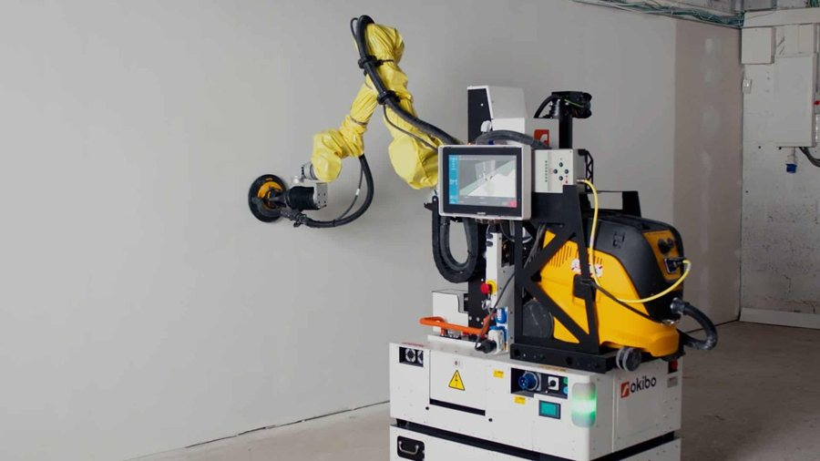
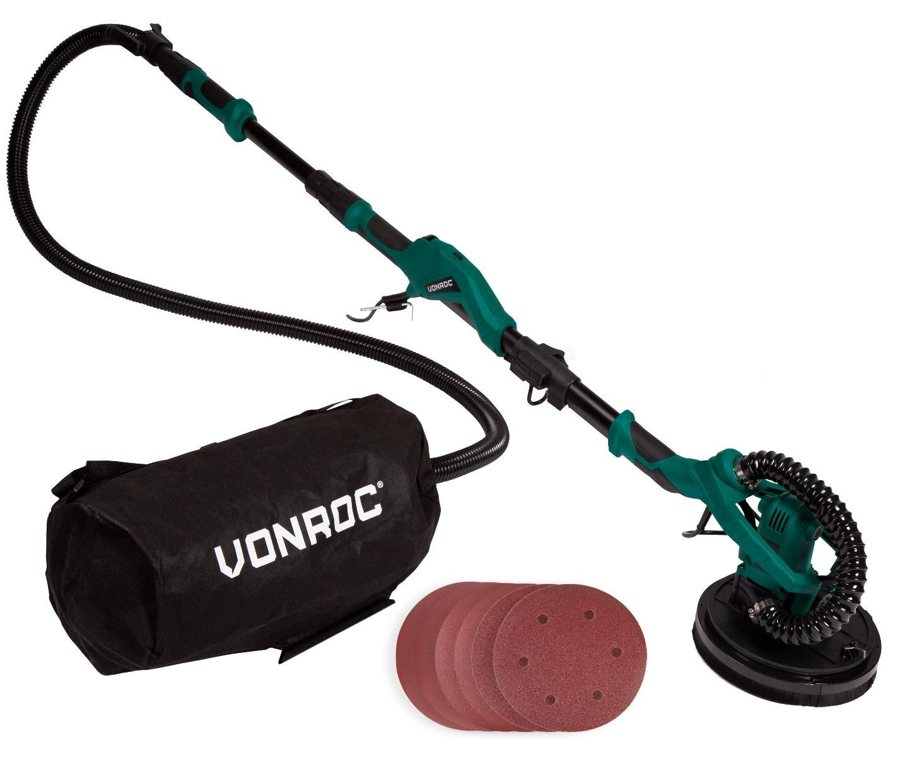

Weitere Produkte dieser Kategorie
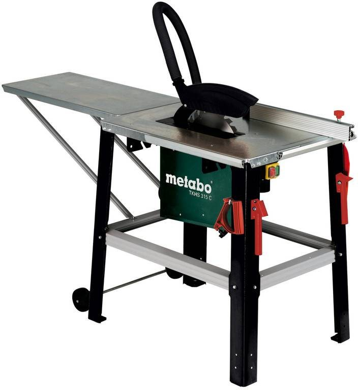

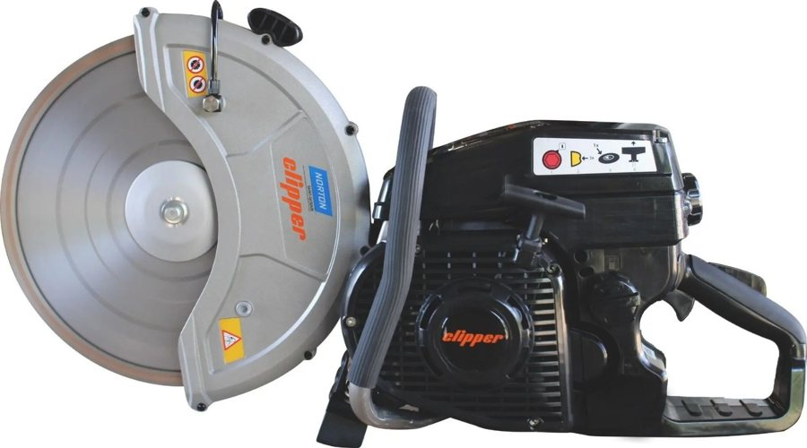

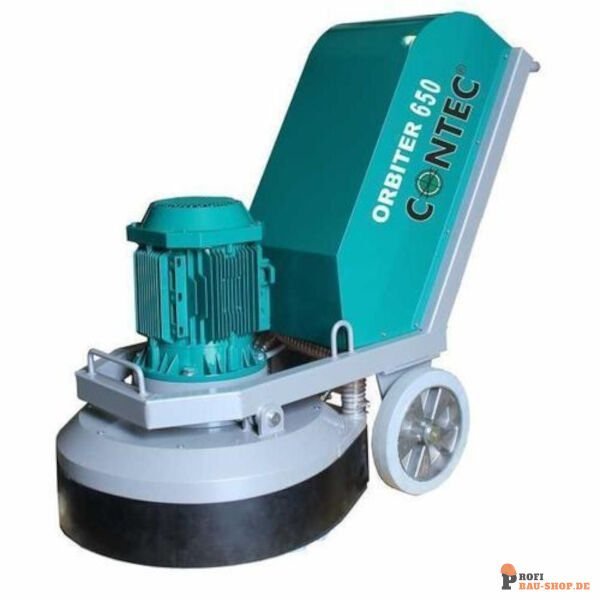
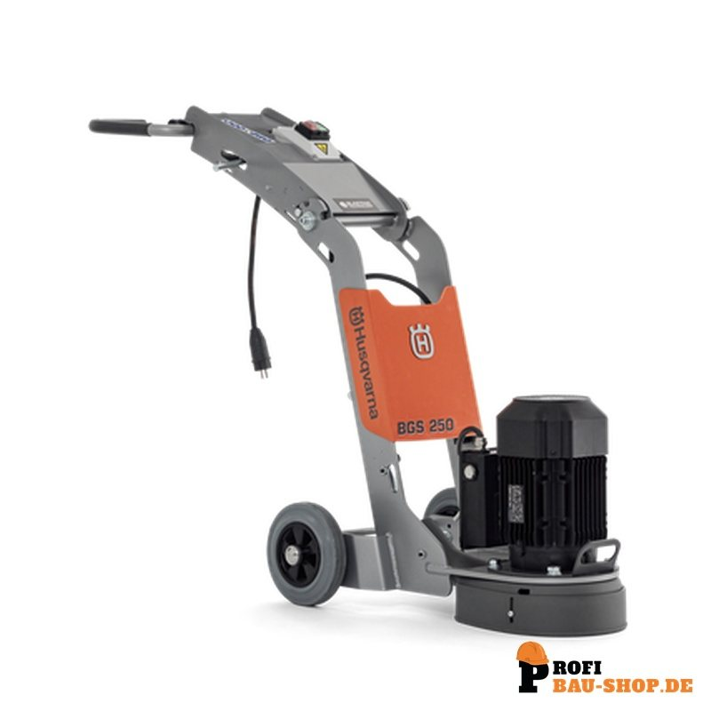


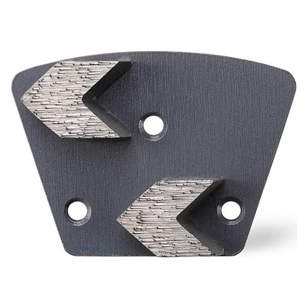

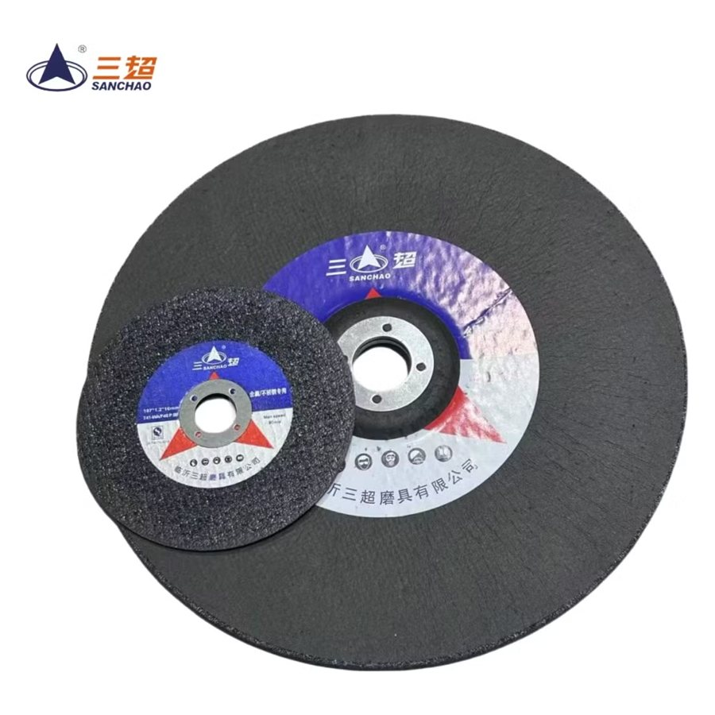
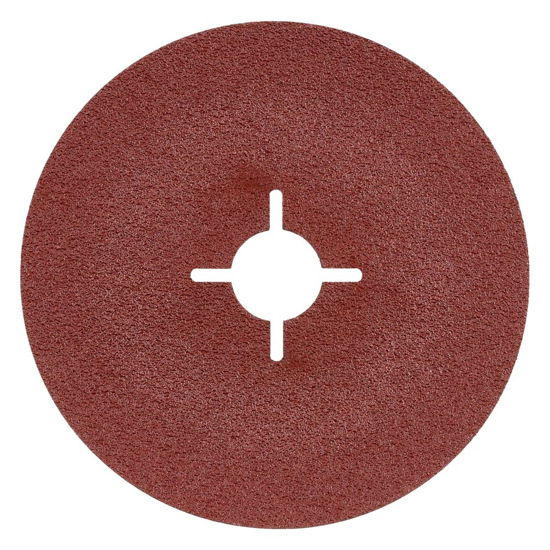


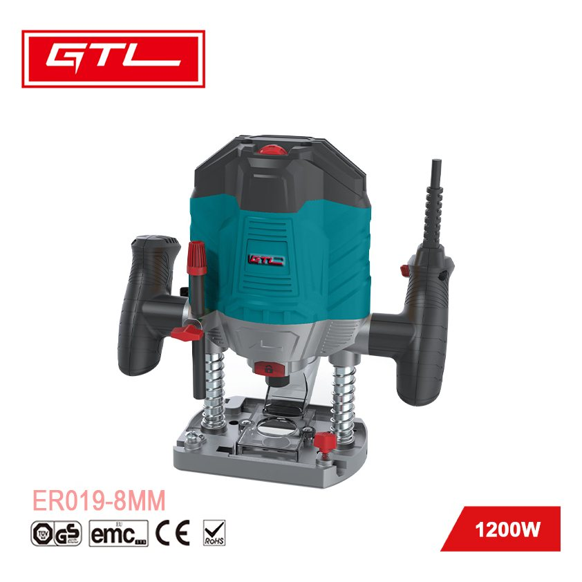
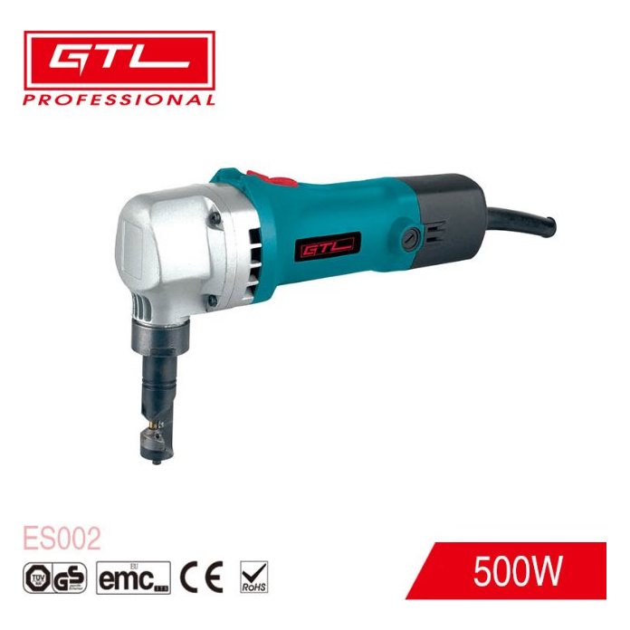
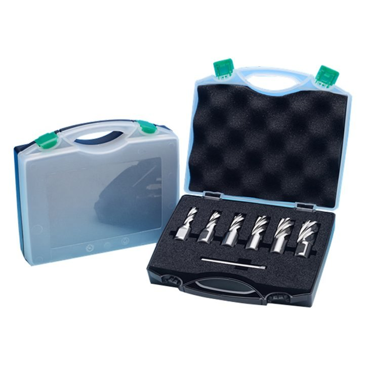